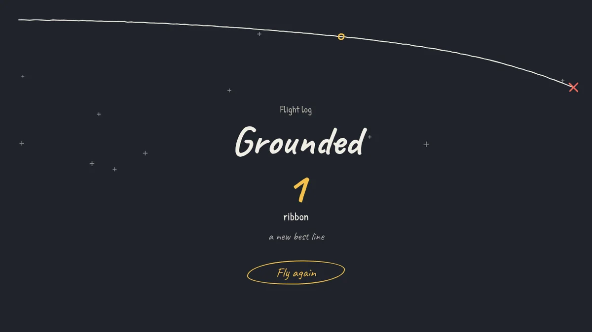

Still open after 2 review rounds
Advisory: these never change a score, a release gate or the verdict. Each is shown with the screenshots it was seen in.
results vs moment:results (minor)
on desktop one chalk star sits against the last letter of 'Grounded', just outside the text box the stars avoid
